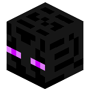
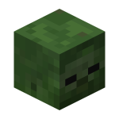
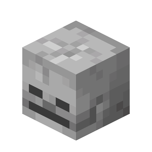

I dove into MLH GHW Cloud Week's challenge with a
pickaxe and a vision! My mission? To build a static
website using HTML and CSS in just one week and challenge
myself to learn some new CSS and HTML tricks along the way.
Naturally, I crafted a Minecraft-themed site,
complete with a gallery of mesmerizing game
screenshots and a sleek slideshow to show them off.
Day 1 was all about brainstorming and sketching my
concept—Figma became my trusty blueprint tool. Over
the next two days, I built a responsive,
Minecraft-inspired interface that looks amazing
whether you’re on mobile, tablet, or desktop.
From there, the adventure continued as I poured
my creativity into mapping out each page's content, refining
it day by day. In the end, I had a website that felt
as immersive as the game itself!

Day 4 of the Hackathon was all about taking my
website to the next level. I dove into enhancing the design
and gave it a creative overhaul! I crafted a button
that looks like the hanging painting item from the game
composed of an
image for the picture and stylized divs for the hanger
—that seamlessly redirects to
a stunning slideshow gallery of Minecraft screenshots.
At each stage, I used Chrome Dev Tools to test how my
website performs on phone, tablet, and desktop, ensuring
the interface provides a smooth and enjoyable experience
no matter what device the user views it on.
As a finishing touch, I added nostalgic background
music straight from Minecraft itself, bringing the
whole experience to life. It's not just a website
anymore; it's an immersive journey into the pixelated
beauty of Minecraft!

Day 6 was the grand finale of my Minecraft Resort Getaway
website adventure! I tackled the finishing touches like
a pro—revamping the gallery to make it sleek and visually
stunning, adding dynamic box-shadows and text-shadows to
every hero card and div for that extra pop, and meticulously
refining the layout to perfection. No detail was too small
as I optimized the responsive UI to shine brilliantly
across mobile, tablet, and desktop screens. I poured
in the final polish, packed the gallery with even
more jaw-dropping screenshots, and brought the home
page to life with engaging descriptions for each hero
card. After six intense days of coding magic, my
masterpiece was complete—shimmering, responsive,
and ready to impress. The last step? Crafting an
epic demo video to showcase it all!
